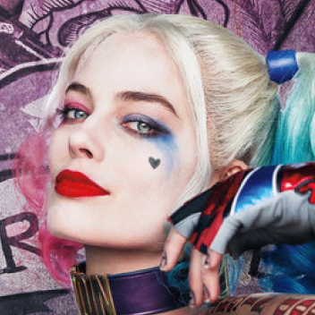

Batman (conocido inicialmente como Bat-Man) es un personaje creado
por los estadounidenses Bob Kane y Bill Finger, y propiedad de DC
Comics. Apareció por primera vez en la historia titulada «El caso
del sindicato químico» de la revista Detective Comics N.º 27,
lanzada por la editorial National Publications el 30/3/1939.
MUJER MARAVILLA
Es una superheroína creada por William Moulton Marston para la
editorial DC Comics. Es una princesa guerrera de las Amazonas,
pueblo ficticio basado en el de las amazonas de la mitología griega.
En su tierra natal es conocida como la princesa Diana de Temiscira
pero fuera de esta utiliza la identidad secreta de Diana Prince.
SUPERMAN
Es un superhéroe que apareció por primera vez en los cómics
estadounidenses publicados por DC Comics. El personaje fue creado
por el escritor estadounidense Jerry Siegel y el artista canadiense
Joe Shuster en 1933 cuando ambos se encontraban viviendo en
Cleveland, Ohio.

HARLEY QUINN
Harley Quinn es un personaje ficticio creado por los estadounidenses
Paul Dini y Bruce Timm para la editorial DC Comics. Quinn hizo su
debut en el vigésimo-segundo episodio de Batman: la serie animada,
«El favor del Joker», en septiembre de 1992 y se convirtió en una
villana recurrente en la serie